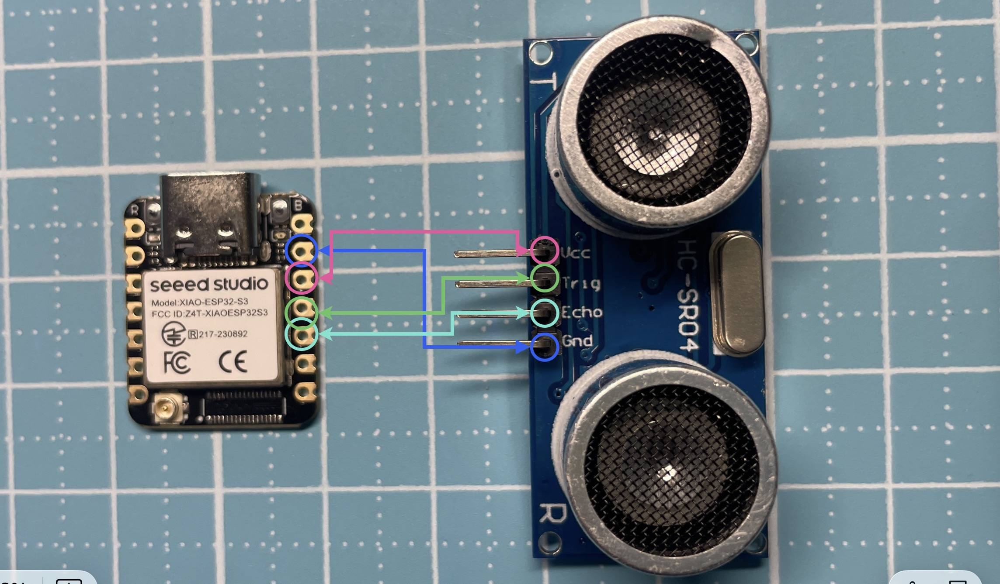

第二步：接線方式（Seeed XIAO ESP32-S3）
- VCC → 5V（或依模組需求）
- GND → GND
- TRIG → GPIO 9
- ECHO → GPIO 8
⚠️ 若模組 ECHO 為 5V，請確認是否需要分壓保護 ESP32 腳位。

圖片來源：
Seeed Studio 官方文件

本教學使用常見的 超音波測距模組（HC-SR04 類型）， 透過發射與接收超音波，計算物體距離。
此程式不使用 while True， 僅量測 10 秒，每秒輸出一次距離後結束。
from machine import Pin, time_pulse_us # 匯入 Pin 與脈衝測量函式
import time # 匯入時間模組
# === 腳位設定 ===
TRIG = Pin(9, Pin.OUT) # TRIG 腳位（輸出）
ECHO = Pin(8, Pin.IN) # ECHO 腳位（輸入）
def get_distance_mm():
# 發送 10 微秒的觸發脈衝
TRIG.value(0)
time.sleep_us(2)
TRIG.value(1)
time.sleep_us(10)
TRIG.value(0)
# 量測 ECHO 高電位時間（微秒）
duration = time_pulse_us(ECHO, 1, 30000)
# 若回傳負值，代表測量失敗
if duration < 0:
return None
# 距離計算（毫米）
distance_mm = (duration * 343) / (2 * 1000)
return distance_mm
# === 開始計時 ===
start_time = time.time()
# === 測量 10 秒 ===
while time.time() - start_time < 10:
dist_mm = get_distance_mm()
if dist_mm is not None:
dist_cm = dist_mm / 10
print("距離: {:.2f} cm ({:.2f} mm)".format(dist_cm, dist_mm))
else:
print("測量失敗")
time.sleep(1) # 每秒測一次